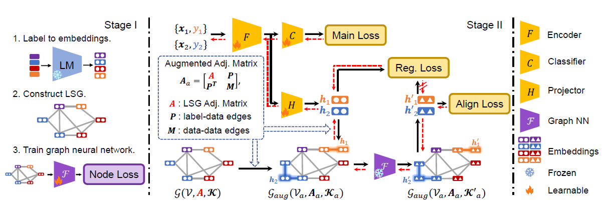
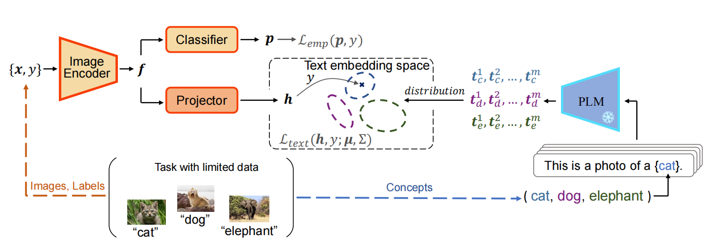
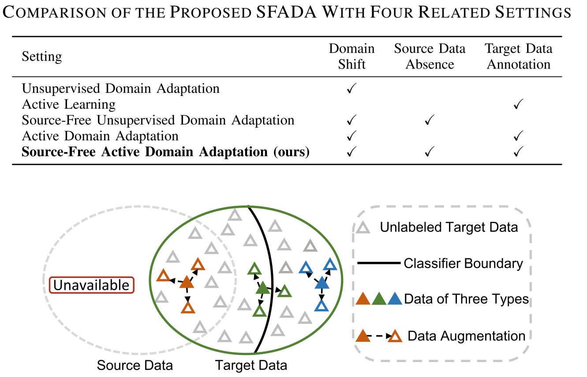
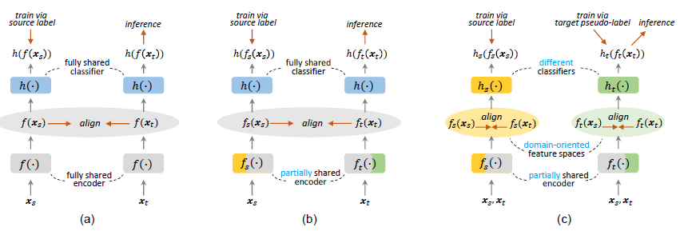
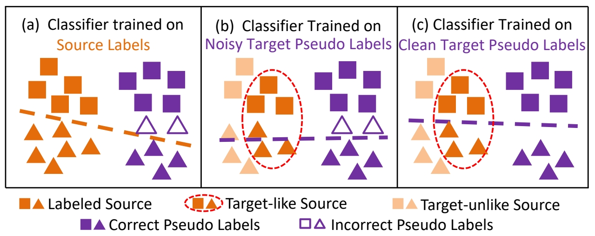
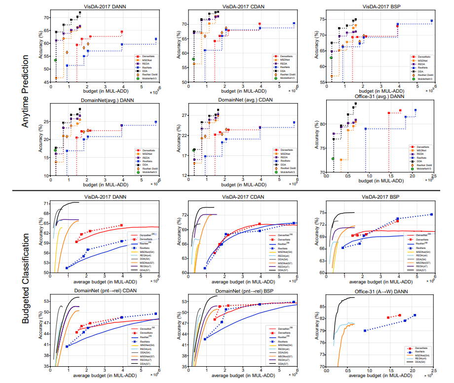

I am a third-year master's student at Beijing Institute of Technology, advised by Prof. Shuang Li. I received my Bachelor's degree in Automation from Beijing Institute of Technology (2017-2021).
My research interest includes learning improved representation for transfer learning, domain adaptation, and data-efficient learning in computer vision tasks. I am currently working on knowledge transfer across modalities.
Contact: I'm always happy to discuss or collaborate! Feel free to drop me an email if you're interested.
[Sep 2023] Our LSG for data-efficient image/video/audio learning is accepted by NeurIPS 2023!
[July 2023] Our BorLan for data-efficient visual learning is accepted by ICCV 2023!
|

|
Language Semantic Graph Guided Data-Efficient LearningWenxuan Ma, Shuang Li*, Lincan Cai, Jingxuan Kang We leverage graph neural network to model language semantic space and benefit data-efficient training. Paper Code |
|

|
Borrowing Knowledge From Pre-trained Language Model: A New Data-Efficient Visual Learning ParadigmWenxuan Ma, Shuang Li*, Jinming Zhang, Chi Harold Liu, Jingxuan Kang, Yulin Wang, Gao Huang We leverage pre-trained language model to capture semantic relations between visual categories and promote data-efficient training on vision models. Paper Code Talk |
|

|
Source-Free Active Domain Adaptation via Augmentation-Based Sample Query and Progressive Model AdaptationShuang Li, Rui Zhang, Kaixiong Gong, Mixue Xie, Wenxuan Ma, Guangyu Gao We investigate the novel problem of source-free active domain adaptation, which considers the inaccessibility of the source domain data during active domain adaptation. Paper |
|

|
Making the Best of Both Worlds: A Domain-Oriented Transformer for Unsupervised Domain AdaptationWenxuan Ma, Jinming Zhang, Shuang Li*, Chi Harold Liu, Yulin Wang, Wei Li We propose to learn two embedding spaces simultaneously, one source domain-oriented and the other target domain-oriented in unsupervised domain adaptation. This is achieved using two domain-specific tokens in vision transformer. Paper Code |
|

|
Meta-reweighted Regularization for Unsupervised Domain AdaptationShuang Li, Wenxuan Ma, Jinming Zhang, Chi Harold Liu*, Jian Liang MetaReg is a self-training based domain adaptation method. We automatically assign optimal weight for target data to reduce the noise of target pseudo-labels. The optimal weights are obtained via meta-learning. Paper Code |
|

|
Dynamic Domain Adaptation for Efficient InferenceShuang Li, Jinming Zhang, Wenxuan Ma, Chi Harold Liu, Wei Li We explore new settings in domain adaptation that considers the computation resource constrains during inference. Paper Code Talk |
Journal Reviewer for TPAMI, TNNLS, TETC, TIICM, etc.
Conference Reviewer for CVPR.
Email: wenxuanma@bit.edu.cn
Address: Room 1103, Central Teaching Building, Beijing Institute of Technology, Beijing